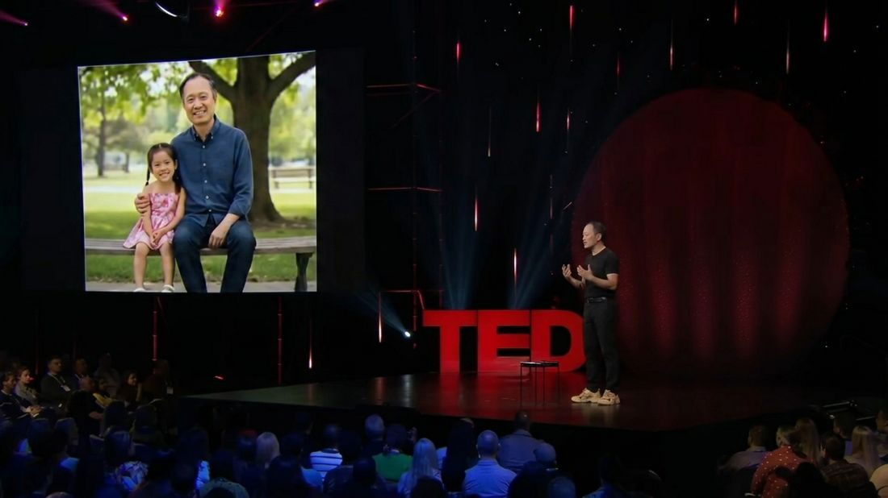
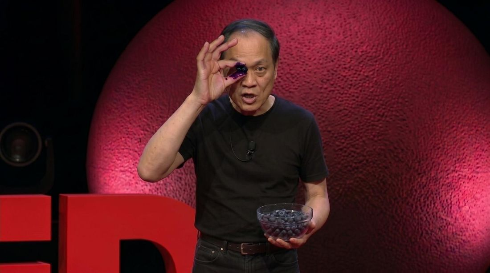

Last week, something unusual happened at a medical conference in Nashville, Tennessee.
Dr. Ming Wang, a world-renowned ophthalmologist, author of the bestseller "From Darkness to Sight", and the same doctor who has treated the vision of famous celebrities, stepped on stage and did something none of his colleagues expected.
In front of a packed audience, he exposed the real reason millions of Americans are losing their vision.
And he revealed a BLUEBERRY TRICK that, according to him, is making glasses, eye drops, and intraocular injections completely unnecessary.
The industry was not happy.
Since the lecture, the presentation video has already been taken down twice.
Dr. Wang received threats from major corporations in the optical industry. And even so, more than 24,000 patients continue reporting results that defy everything conventional medicine teaches.
Health Report gained exclusive access to the full transcript of the lecture.
And what Dr. Wang revealed that night could change the way you see — literally — for the rest of your life.
If you are over 50 and struggle with blurry vision, dark spots, floaters, difficulty reading fine print, or fear of driving at night, read carefully.
Because what you are about to discover will make you question every dollar you've spent on glasses and every diagnosis you've accepted without questioning it.
Dr. Ming Wang: Good evening, everyone. Thank you for being here.
Before I begin, I want to be completely direct with you.
What I'm about to share over the next few minutes may upset a lot of people in this room. Especially anyone who makes a living selling glasses, prescribing eye drops, or profiting from laser surgeries.
But I did not step onto this stage to please the industry.
I stepped up because millions of Americans are losing their vision unnecessarily. And someone needs the courage to tell the truth.
I have been an ophthalmologist for 14 years. I have treated Hollywood celebrities, I am a bestselling author, and I have more than 24,000 documented patients.
But even after all of that, the moment that truly changed my career did not happen in a sophisticated Beverly Hills office.
It happened at a simple Sunday barbecue… at my own house.

My daughter, Emma, was only 3 years old. She was playing near the pool, and my father — who loved that little girl more than anything — was watching her.
Or… at least, trying to.
Because my father was 66 and could barely see anymore. He had wet macular degeneration, the most aggressive form of the disease.
We had already tried everything.
Eye injections every two weeks. A needle straight into the eyeball. It was torture.
And the worst part is that the treatment didn't even bring his vision back. It only tried to slow the destruction.
Then suddenly we heard a splash. Something had fallen in the water.
My father started screaming, desperate: "Emma fell in the pool! I can't see her! Where is she?"
I ran. I got my daughter out of the water in time. She was fine.
But my father… my father was never the same after that day.
He fell into a deep depression. He kept saying he had failed as a man. That he could no longer be trusted with his granddaughter.
And I would look at the man who had always been my hero and think:
"What good is it that I've been a doctor for 14 years if I can't help my own father?"
That was the day I made a promise. I was going to find a real solution.
No more temporary fixes. No more thicker and thicker glasses.
I wanted to find something that could actually restore his vision. And I found it.
But for you to understand what I discovered, you first need to understand what is really behind the destruction of your vision.
Because according to what I found, it is not exactly what your doctor told you.
Raise your hand if you watched TV today.
Who looked at their phone for more than an hour?
Who has a phone in their pocket right now?
Exactly. And that is precisely where the problem is.
After more than five years of research with my colleagues at Harvard, we started noticing something that completely changes the way we look at vision loss.
It does not happen simply because you are getting older.
It is not only genetics. And it is not as simple as blaming everything on diabetes or high blood pressure.
What caught our attention most was something else: constant exposure to screen light and the artificial lights that are part of our daily routine.
TV. Phone. Tablet. Computer. LED lights.
I know… it sounds too simple, doesn't it?
But let me show you what may be happening inside your eyes.
Researchers at the Mayo Clinic ran a study in 2025 using a synthetic film designed to mimic the material inside the human eye.
They placed that film in front of a TV, at a normal viewing distance, as if someone were watching at home.
And what happened next was terrifying.
In just 60 minutes, the film started to turn cloudy. It began to heat up and soften.
After 5 hours, it was visibly dry.
Tiny microscopic scratches had appeared, and the film was starting to break down.
Now stop and think about that…
What if something similar were happening inside your eyes?
Every day. For years. For decades.
That is exactly the kind of constant exposure worrying researchers.
In 1950, less than 20% of the population had some kind of vision problem.
Do you know why?
Because most families barely had a television at home. That level of artificial light exposure simply was not part of human life.
Today, more than 240 million Americans wear some kind of glasses.
Millions suffer from dry, red, irritated eyes.
And diseases like macular degeneration and cataracts — once associated mainly with very advanced age — are being diagnosed earlier and earlier.
But do you know what is even more concerning?
It is not only the damage this exposure can cause.
It is what it can do to your eyes' own repair system.
Your eyes have an impressive repair system.
It is as if there is a maintenance crew working there all the time, going to the spots that need repair and helping rebuild damaged tissue.
Think about it this way:
You cut your finger? Your body starts repairing the skin.
You break a bone? It starts a whole rebuilding process.
And something similar happens in the eyes.
Every day, small repair processes happen without you even noticing. That is what helps keep eye tissues working normally and vision preserved.
But with constant exposure to screen light — month after month, year after year — that balance can be disrupted.
It is like putting a firefighting crew in front of a fire that never stops growing.
They put out one part… but the fire keeps growing.
Until there comes a point when the repair system can no longer keep up with the pace of the damage.
And that is when the problems begin.
The lens can lose transparency. The retina can undergo changes. The optic nerve can be affected.
And little by little, vision can start to get worse — from the inside out.
That is why simply wearing glasses does not fix the cause of every vision problem.
It is like putting a new lens on a camera that has an internal problem.
The lens may be perfect… but if there is another problem inside the camera, it still will not work right.
And eye drops?
They can relieve some symptoms, especially on the surface of the eye. But that does not mean they are treating all the causes behind vision loss.
Even more aggressive treatments, like some injections, may aim to control or slow certain diseases without necessarily fully restoring lost vision.
Now for the part you have been waiting for. Is there a way to reverse this?
Yes. There is.
And the strangest part is that this story stayed hidden for decades.
When I was desperate, searching for anything that could help my father, I started digging through old studies, military documents, and research done during the Cold War.
That is when I found a story that really caught my attention.
The Soviets were obsessed with one question:
How do you improve soldiers' vision under extreme conditions?
And one of the names that kept appearing in that story was Simo Häyhä, the Finnish sniper known as the "White Death."
He became famous during the Winter War for extraordinary accuracy, even in snow, intense cold, and extremely difficult visibility.
From there, researchers started investigating something very simple:
Could certain foods help protect and improve eye function?
In that search, a small fruit started showing up again and again.
The blueberry.
More specifically, wild blueberry varieties from northern Europe.
And that is when I started to understand why this fruit had been studied for so long when the subject was vision.

And I am not talking about the common blueberry you find at the grocery store.
I am talking about wild varieties that grow in the coldest regions of northern Europe — places like Finland and Sweden — where temperatures can drop dozens of degrees below zero.
And there is one feature of these fruits that really stands out.
Because of the extreme conditions they grow in, they develop a much higher concentration of anthocyanins — the natural pigments responsible for the blueberry's deep blue-purple color.
And that is where my research got truly interesting.
Because anthocyanins have been studied specifically for their antioxidant potential and their relationship with eye health.
It is as if you are giving the body more tools to handle environmental stress.
But there is a very important detail.
It is not enough to simply buy any blueberry supplement.
How the fruit is processed can make all the difference in how many compounds remain in the final product.
Some processing methods — especially those involving heat — can reduce certain compounds in the fruit.
That is why researchers study low-temperature processing techniques to better preserve those components.
And that is where the frozen blueberry comes in.
The idea is simple: preserve as many of the fruit's natural compounds as possible, instead of destroying some of them during processing.
Because at the end of the day, it does not matter how powerful a fruit is on paper… if what makes it special is lost before it ever reaches your body.
Now, I need to be honest with you.
The wild Nordic blueberry alone does not fix everything.
It is an important piece. But during my research, I discovered that the combination with two other ingredients is what makes this formula different.
That is because each of the three has a different function.
The blueberry works on one part. The second ingredient works on another. And the third completes what the other two cannot do alone.
It is like a three-legged table.
If you remove one leg, the table falls.
It is the three together that make everything work.
And when I started studying that combination, that is when things got truly interesting.
That was the phase when my father started noticing changes in his vision.
And it was also when we began tracking results from other people testing the formula.
Now, I am not going to reveal those other two ingredients here in this lecture.
Not because it is some secret.
But because the amount of each one and the way they are combined make a huge difference.
Taking only blueberry, any which way and at the wrong dose, would be like trying to start a car with only the key… but no battery and no gas.
You have one right piece. But the engine simply does not run.
That is why my team put everything into a short presentation.
There, you will discover what the three ingredients are, how they are combined, and how this formula is used.
The link is at the end.
But before that, let me tell you what happened when we started using the three ingredients together.
My father was the first person to try it.
Every morning after coffee, he took the three ingredients we were researching.
In the first week… nothing very different.
But in the second, he started noticing some changes.
That constant blurriness he had lived with for years seemed to be fading.
He could already see the numbers on the television without squinting.
By the fourth week, he started noticing details he had not noticed before.
He could see faces better from across the room.
And little by little, he regained the confidence to go back to doing things he had stopped doing.
Until a few weeks later, a moment happened that I will never forget.
My mother called me crying.
But it was not sadness.
She just said: "Son… he's back." My father was in the garage, working on the old 1970 Mustang.
Grease on his hands. Radio on.
And that smile I had not seen in so long.
Today, he is back to driving the Mustang, spending more time in the garage, playing golf with his friends, and even reading bedtime stories to my daughter.
For me, that moment meant much more than a possible change in vision.
It was watching my father regain his confidence and return to the things he loves.
And it was precisely because of that experience that we decided to go further.
We did not want to rely on a single case.
We wanted to understand whether this combination could help other people too.
So we started following more people, with different eye-health related problems.
And that is when we realized there was still a lot to investigate.
Today, my team has put all of this into a short presentation.
There, you will understand what the three ingredients are, why they are being studied, how this combination works, and how it is used.
I ask that you watch it.
Not for me. But for your father. For your mother. For your husband. For your wife.
And most of all, for you. Because taking care of your vision is not something you can put off.
So the question is simple: Will you keep ignoring the signs, or will you start understanding better what you can do for the health of your eyes?
Thank you.